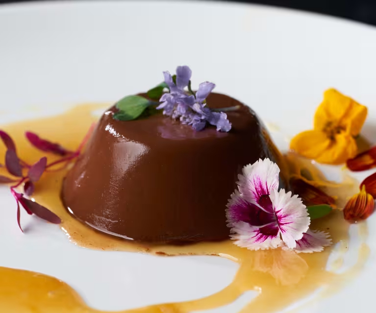
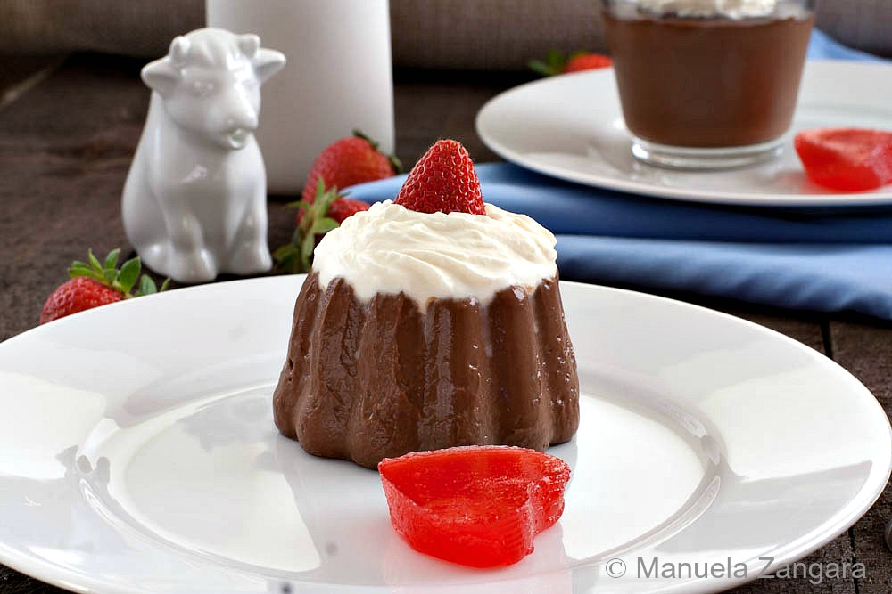

Budino al Cioccolato (Chocolate Budino)

Ingredients
- 4.2 oz (120g) dark chocolate 70%+ cocoa. Use baking or cooking chocolate
- ⅓ cup (70g) caster sugar
- 5 tablespoons (70g) unsalted butter
- 2 tablespoons (20g) cornstarch cornflour UK
- 1 + ½ cups (360ml) whole milk (full-fat)
- Sunflower oil for greasing (see notes)
Instructions
Requires 3 hours chilling time.
- Gently heat the milk in a saucepan, bring to a boil then immediately turn off the heat and set aside.
- Melt the butter in a separate saucepan, once melted add the sugar and whisk the mixture until it thickens and turns a pale yellow colour (almost like a roux).
- Next, turn the heat down low and add the chocolate. Stir it gently until melted. Sift in the cornstarch and stir it in so there are no lumps.
- A little at a time, add the hot milk until fully combined into the chocolate mixture. Turn the heat up to medium and stir it for about 3-5 minutes until thick and glossy.
- The budino is now ready to pour into moulds or ramekins. Important: if using moulds make sure to lightly grease each one with a little sunflower oil first. If using ramekins or glass serving dishes you can pour the budino straight in.
- Let it cool to room temperature then chill in the fridge for at least 3 hours. Remove from the fridge for 5 minutes before serving.

How to remove Budino from moulds
- Remove the budino from the fridge 5 minutes before serving. Give the mould a shake from side to side to help loosen the budino from the edges.
- Turn it out onto a plate and shake the budino once or twice to dislodge it from the mould, serve.
Notes
- Note on chocolate: Make sure to use baking or cooking chocolate as regular chocolate can have a gritty or chalky texture when melted. 70%+ cocoa gives the best results.
- If using moulds: If you plan on using a mould, even if it's silicone or non-stick you MUST grease the moulds lightly with a little sunflower oil first or the budino will be hard to remove. You don't need to do this if you are serving it in ramekins or glass serving dishes.
- Storage: The budino is best eaten within 2 days but will last for up to 4-5 days in the fridge. Do not freeze.
- The moulds we used: The moulds that we used to shape our budino in the photos were purchased from Ikea. Panna cotta moulds or silicon moulds also work really well - all of them must be greased with sunflower oil first!